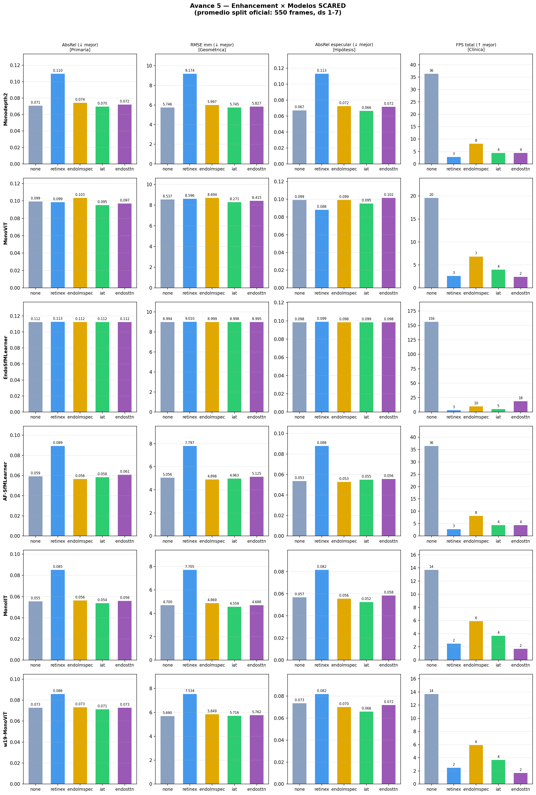
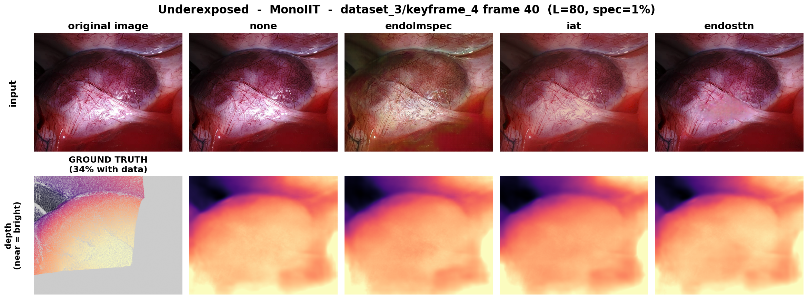
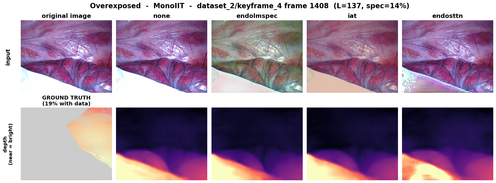
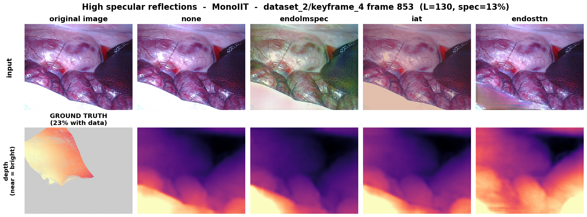

Assessing the Impact of Endoscopic Image Enhancement
on Monocular Depth Estimation in SCARED

J. M. Toral

E. C. Morales
M. P. Gutiérrez
J. M. Toral, E. C. Morales, M. P. Gutiérrez, G. Camacho-Gonzalez, R. Espinosa, G. Ochoa-Ruíz
School of Engineering and Sciences · Tecnológico de Monterrey · Team 52
The Problem
Monocular depth estimation — predicting per-pixel distance from a single RGB frame — underpins surgical navigation, 3D reconstruction and robotic assistance in minimally invasive surgery.
But endoscopic images are severely degraded by illumination artifacts: the light source is coaxial with the camera, causing radial fall-off, vignetting, under/over-exposure and specular highlights.

Research Question
Does improving the endoscopic image before inference actually improve monocular depth estimation?
The intuitive hypothesis
Enhancement should reduce depth error by suppressing illumination artifacts and recovering texture in poorly exposed regions.
The catch
A visually improved image is not necessarily a geometrically better input. Contrast amplification, color shifts or over-smoothing can introduce artificial cues that corrupt depth inference.
Key Insight: illumination correlates with error
Our exploratory analysis on SCARED shows the brightest regions coincide with where least valid ground-truth depth exists (Pearson correlation down to −0.86).
The illumination gradient is systematic and asymmetric (centered on the optical axis). The problem is fundamentally geometric, not just visual — uneven light constrains where depth can be reliably estimated.

Proposed Solution: a controlled evaluation pipeline
official split
550 frames"] --> ENH subgraph ENH ["Image Enhancement E_i (independent variable)"] E0["none"] E1["Endo-LMSPEC"] E2["IAT"] E3["Endo-STTN"] end ENH --> M["5 depth models D_j
(SCARED weights)"] M --> D["median scaling -> mm"] GT["Ground truth
(structured-light)"] --> CMP["compare on valid mask"] D --> CMP CMP --> R["AbsRel · RMSE · delta · IT"] style ENH fill:#cfe8ff,stroke:#2766CB style M fill:#cfe8ff,stroke:#2766CB style GT fill:#fff3cd,stroke:#E0A800 style R fill:#1a2e51,stroke:#E0A800,color:#fff
Xraw → Ei(Xraw) → Dj(Ei(Xraw)) → Ẑij — only the preprocessing changes; split, mask, models, scaling and metrics stay fixed.
Enhancement methods & depth models
Enhancement (4 input conditions)
| Method | Role |
|---|---|
| none | raw baseline |
| Endo-LMSPEC | multi-scale exposure correction (Endo4IE-trained) |
| IAT | lightweight transformer illumination (Endo4IE-trained) |
| Endo-STTN | temporal specular inpainting |
Depth models (5 architectures)
| Model | Family |
|---|---|
| Monodepth2 | ResNet18 — CNN baseline |
| EndoSfMLearner | DispResNet18 — endoscopic |
| AF-SfMLearner | ResNet18 + appearance flow |
| MonoViT | MPViT — transformer |
| MonoIIT | MPViT + HR-Depth — domain-adapted |
How we measure: metrics
AbsRel (primary) = mean per-pixel relative error:
AbsRel = (1/N) Σ |Zp − Ẑp| / Zp
Also report SqRel, RMSE (mm), RMSE-log and δ<1.25ᵏ (% of "almost-correct" pixels), plus inference time (IT) — real-time is a clinical prerequisite.
Median scaling
Monocular depth is scale-ambiguous; each prediction is scaled by median(GT)/median(pred) to mm, only over valid GT pixels (mask Ω).
ΔAR%
Change in AbsRel vs. none. Negative = enhancement helped.
Findings: the full result (ΔAbsRel %)
| Model | none | endolmspec | iat | endosttn | Best |
|---|---|---|---|---|---|
| Monodepth2 | 0.0708 | +4.9% | −1.7% ← | +1.7% | iat |
| MonoViT | 0.0727 | +0.4% | −1.9% ← | +0.1% | iat |
| EndoSfMLearner | 0.0845 | +3.8% | +4.0% | +7.0% | none |
| AF-SfMLearner | 0.0592 | −4.7% ← | −1.7% ← | +2.7% | endolmspec |
| MonoIIT | 0.0554 | +1.4% | −3.1% ← | +0.7% | iat |

Best configuration of the study
MonoIIT + IAT → AbsRel 0.0537
δ<1.25 = 0.9738. Below its already-low baseline (0.0554).
Key findings
IAT is the most versatile
Improves 3 of 5 models (Monodepth2, MonoViT, MonoIIT). Smooth, attention-driven correction that preserves micro-textures.
Model-dependent
AF-SfMLearner peaks with Endo-LMSPEC (−4.7%); EndoSfMLearner is hurt by every method.
Endo-STTN: visual ≠ geometric
Removes specular glare but smooths over micro-textures depth needs → negligible gain, ~300× slower.
Qualitative: severe underexposure

IAT elevates local illumination while preserving shading gradients crucial for inferring curvature → smoother, more coherent depth. Endo-LMSPEC adds color shifts; Endo-STTN barely changes low-light geometry.
Qualitative: severe overexposure

Endo-LMSPEC introduces greenish chromatic aberration (a domain shift); Endo-STTN inpaints glare but strips capillary micro-textures. IAT mitigates intensity without removing topological detail — reinforcing it as the most versatile method.
Qualitative: specular highlights

Even where specular inpainting visually "cleans" the frame, the geometric gain is marginal: the depth network relies on the very high-frequency detail the inpainting removes. Visual cleanup ≠ better geometry.
Core recommendations
Deploy MonoIIT + IAT
Best accuracy (AbsRel 0.0537). For surgical depth on SCARED-like data, this is the recommended configuration.
Match enhancement to model
No universal winner. Validate the pair, don't apply a method by default — the wrong one degrades accuracy.
Avoid Endo-STTN in real time
~19.7 s/frame is incompatible with intra-operative use; its visual gain doesn't translate to geometry.
Benefits & expected results
Clinical value
Methodological value
Future work
- Unified runtime environment for all model × enhancement permutations → exact latency profiling and numerical consistency.
- Paired statistical testing & confidence intervals to confirm improvements are significant across photometric regimes.
- Cross-dataset generalization: scale the protocol to Hamlyn and C3VD (different cameras, light sources, anatomy).
- Train enhancement optimizing the depth metric directly, not perceptual quality; extend to full 3D reconstruction (multi-frame fusion).
Takeaways
- Image enhancement can reduce depth error — but the effect is modest and architecture-dependent.
- IAT is the only generalizable method; MonoIIT + IAT (0.0537) is the best configuration.
- Endo-STTN shows the core lesson: visually better ≠ geometrically better, and real-time cost matters.
Thank you · Questions
References (selected)
[2] R. Espinosa, J. Cerriteño, S. Gonzalez-Dominguez, G. Ochoa-Ruiz, C. Daul. A deep learning-based image pre-processing pipeline for enhanced 3D colon surface reconstruction robust to endoscopic illumination artifacts. IEEE CBMS, 2024, pp. 81–88. doi:10.1109/CBMS61543.2024.00022 (reference structure)
[4] M. Allan et al. Stereo Correspondence and Reconstruction of Endoscopic Data Challenge (SCARED). arXiv:2101.01133, 2021.
[5] C. Godard et al. Digging into self-supervised monocular depth estimation. ICCV, 2019. (Monodepth2)
[6] C. Zhao et al. MonoViT: self-supervised monocular depth with a vision transformer. 3DV, 2022.
[7] S. Shao et al. Self-supervised monocular depth and ego-motion estimation in endoscopy (AF-SfMLearner). Med. Image Anal. 77, 2022.
[8] K. B. Ozyoruk et al. EndoSLAM / Endo-SfMLearner. Med. Image Anal. 71, 2021.
[9] D. Recasens et al. Endo-Depth-and-Motion. IEEE RA-L 6(4), 2021.
[10] X. Lyu et al. HR-Depth. AAAI 35(3), 2021. [11] Y. Lee et al. MPViT. CVPR, 2022.
[12] A. Garcia-Vega et al. Endo-LMSPEC. IEEE ISBI, 2023. [13] Z. Cui et al. IAT. BMVC, 2022.
[14] R. Daher et al. Endo-STTN. Med. Image Anal. 90, 2023. [15] A. Garcia-Vega et al. Endo4IE dataset. Mendeley Data, 2022.